INSPEÇÕES • TELECOMUNICAÇÕES • TSSR
Vanderlei
Campos
Especialista em Inspeções Técnicas de Infraestrutura
Aproximadamente 15 anos transformando atividades de campo em dados precisos, evidências técnicas e decisões seguras para equipes de engenharia.
15+anos de campo
Brasildisponibilidade nacional
CNH A/Bmobilidade operacional
PERFIL PROFISSIONAL
Experiência de campo que apoia decisões de engenharia.
Atuação em inspeções, TSSR, levantamentos de infraestrutura, auditorias, inventário de ativos, medições, croquis e documentação técnica e fotográfica.
Experiência em projetos relacionados a Huawei Brasil, CelPlan Technologies, Eolen do Brasil, Zopone Engenharia, Prencell Telecom e outras organizações do setor.
NOVOS DESAFIOS
Áreas de interesse e disponibilidade
Experiência técnica transferível para ambientes de infraestrutura crítica, com disponibilidade para viagens, embarque, escalas e projetos no Brasil e no exterior.
COMPETÊNCIAS
Do local à documentação final.
TRAJETÓRIA
Experiência profissional
2016 — atualVJC Technology
Especialista em Inspeções Técnicas de Infraestrutura
TSSR, site survey, auditorias, inventário de ativos, medições, croquis e documentação fotográfica em diferentes regiões do Brasil.
2018 — 2019Eco Sistemas
Analista de Tecnologia e Sistemas
Desenvolvimento, manutenção e suporte de sistemas corporativos para a área da saúde.
2014 — 2015Huawei Brasil
Analista de Tecnologia de Produtos
Auditorias técnicas, inspeções, inventário de ativos, controle de qualidade e apoio à engenharia.
2010 — 2012Seteh Engenharia
Técnico de Implantação e Inspeções Técnicas
Inspeções, implantação, auditorias físicas, controle de qualidade e suporte à engenharia.
2007 — 2010Scalar Telecomunicações
Técnico de Inspeção e Auditoria Física
Inspeções de sites, conferência de ativos, levantamentos fotográficos e documentação técnica.
QUALIFICAÇÕES
Segurança e prontidão operacional
Formação técnica concluída em Telecomunicações, com diploma em emissão e solicitação do registro no CFT após o recebimento.
Trabalho em Altura • 16 h
Válida até mai/2028Eletricidade • 40 h
Válida até out/2027Reciclagem • 8 h
Emitida em ago/2026Reciclagem • 4 h
Emitida em ago/2026Formação de 12 horas
Emitida em fev/2025Avaliação Teórica — ANAC
Emitida em mai/2026REGISTROS REAIS
Trabalho de campo
Registros reais de inspeções, levantamentos, medições e infraestrutura realizados em atividades de campo.
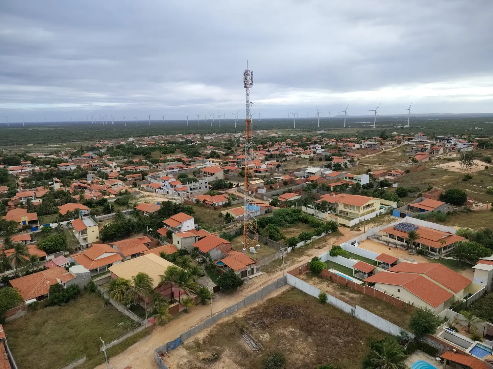
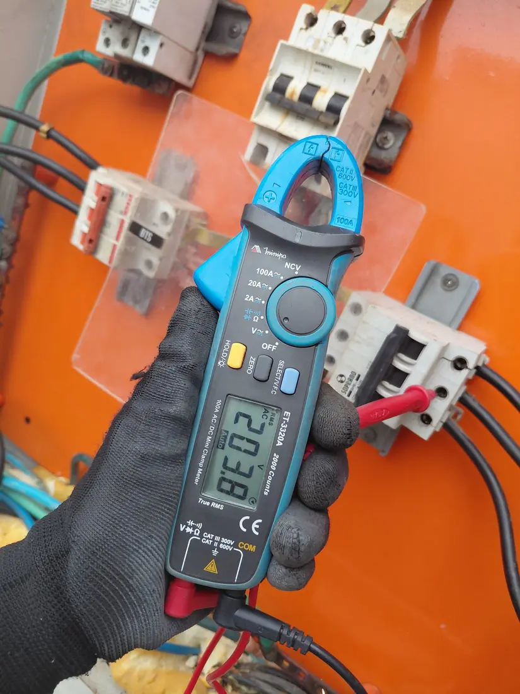
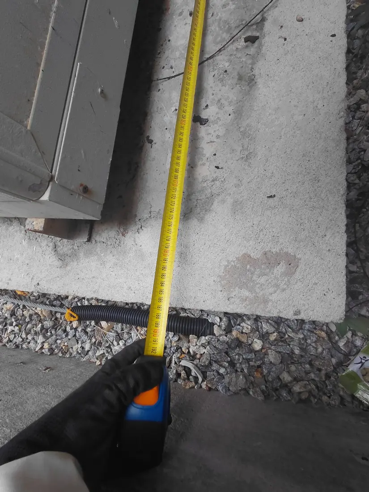
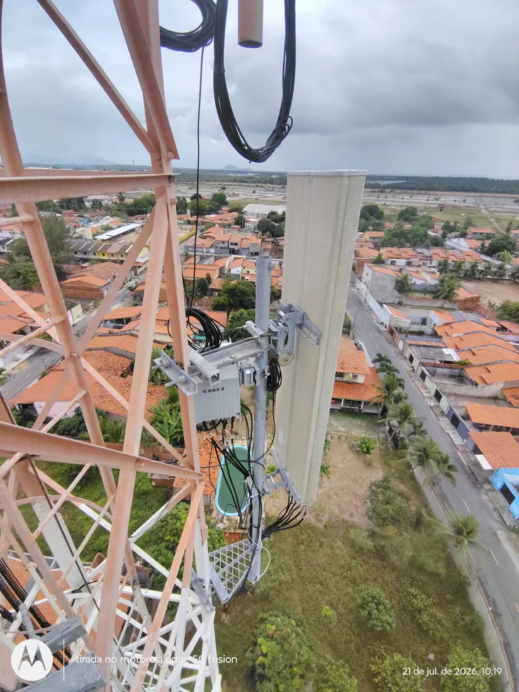
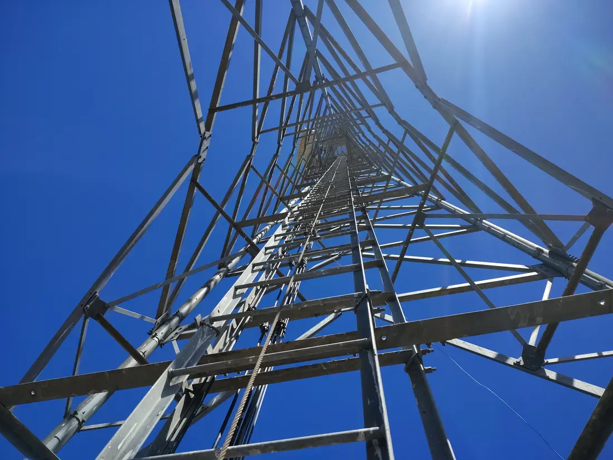
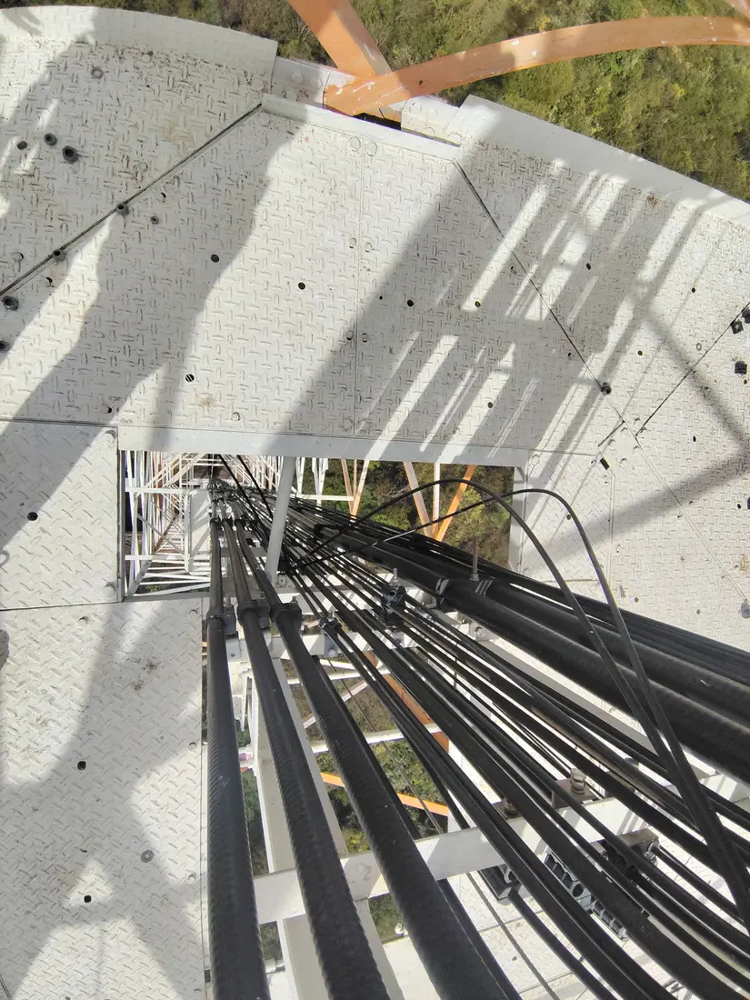
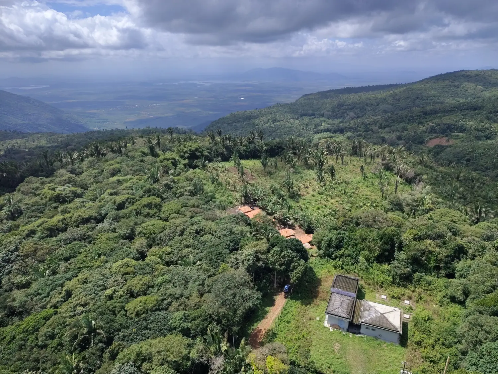
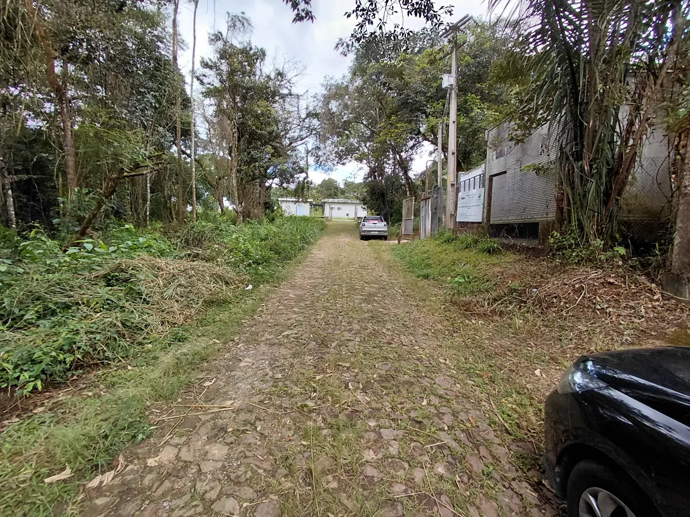
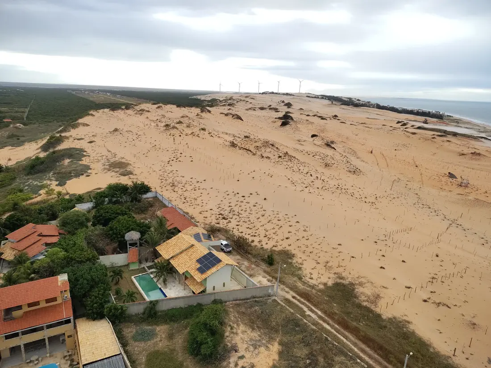
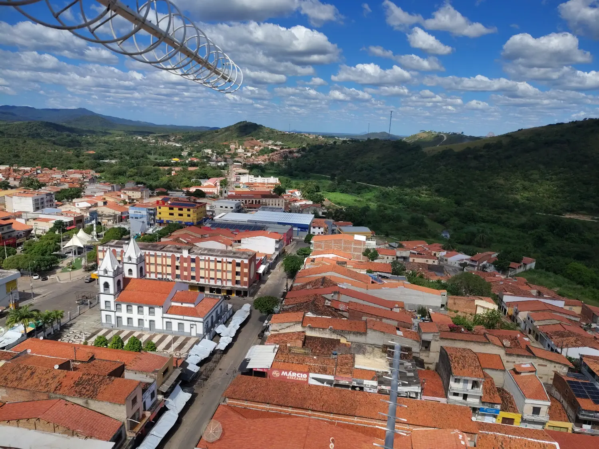
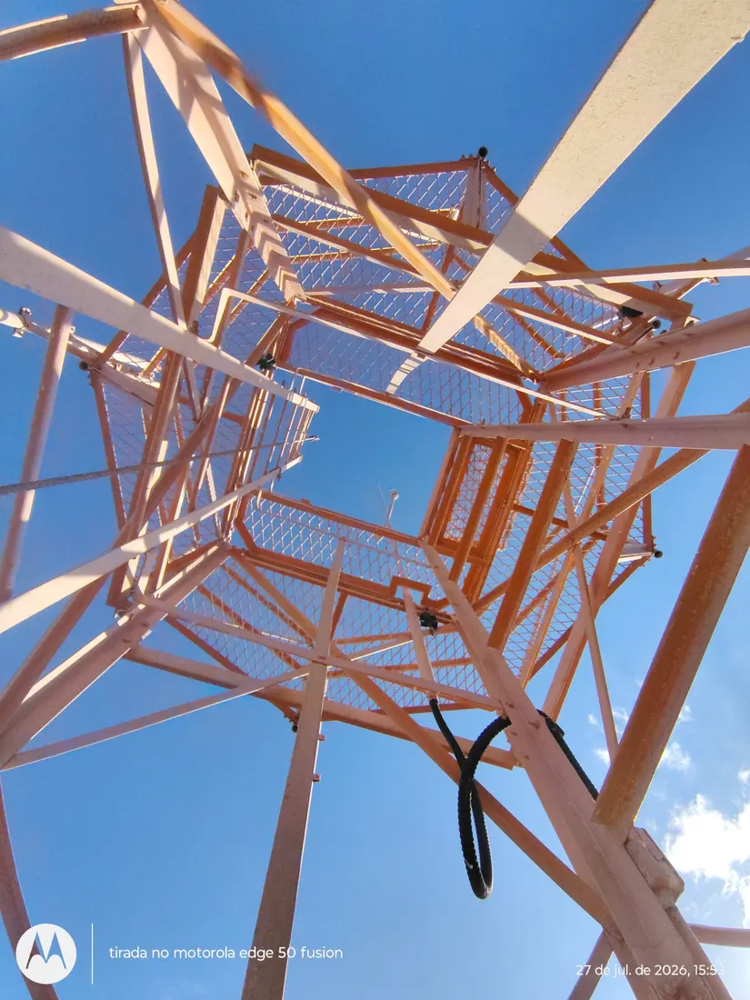
Imagens do acervo profissional. Informações de clientes, coordenadas e dados confidenciais não são exibidos.
Deseja analisar os registros fotográficos completos das vistorias e medições?
📂 Acessar Acervo Técnico Completo (100+ Fotos)CONTATO
Disponível para novos projetos e oportunidades.
Caucaia — Ceará • Viagens nacionais e internacionais • Regime de embarque e escalas